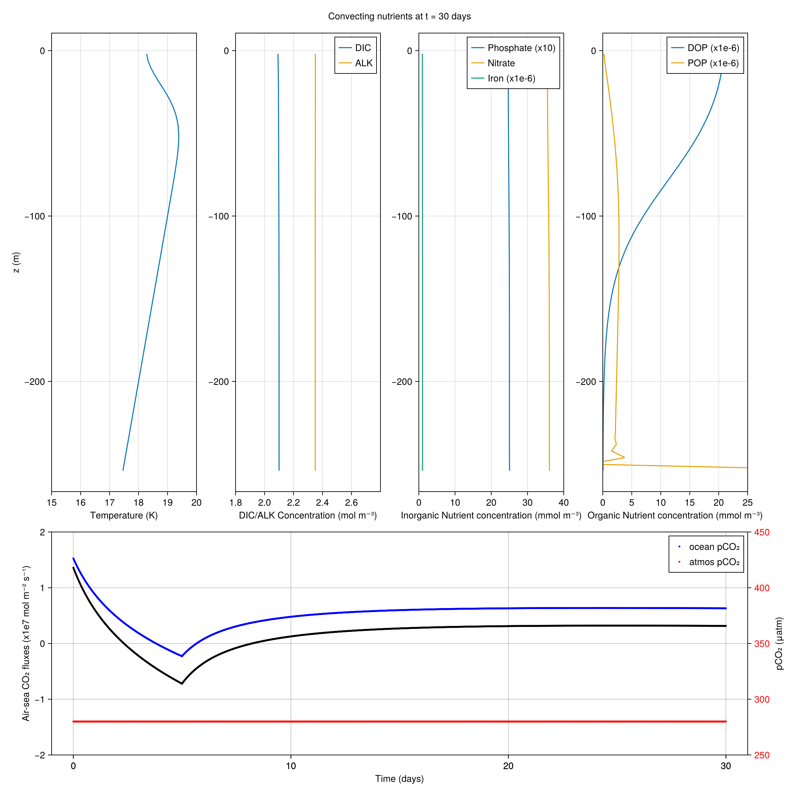

Simple carbon cycle biogeochemistry model
This example illustrates how to use ClimaOceanBiogeochemistry's CarbonAlkalinityNutrients model in a single column context.
using ClimaOceanBiogeochemistry: CarbonAlkalinityNutrients
using ClimaOceanBiogeochemistry.CarbonSystemSolvers.UniversalRobustCarbonSolver: UniversalRobustCarbonSystem
using ClimaOceanBiogeochemistry.CarbonSystemSolvers: CarbonChemistryCoefficients
using Oceananigans
using Oceananigans.Units
using Oceananigans.TurbulenceClosures: CATKEVerticalDiffusivity
using Printf
using CairoMakieA single column grid
We set up a single column grid with 4 m grid spacing that's 256 m deep:
grid = RectilinearGrid(size = 64,
z = (-256meters, 0),
topology = (Flat, Flat, Bounded))1×1×64 RectilinearGrid{Float64, Oceananigans.Grids.Flat, Oceananigans.Grids.Flat, Oceananigans.Grids.Bounded} on Oceananigans.Architectures.CPU with 0×0×3 halo
├── Flat x
├── Flat y
└── Bounded z ∈ [-256.0, 0.0] regularly spaced with Δz=4.0Buoyancy that depends on temperature and salinity
We use the SeawaterBuoyancy model with a linear equation of state, where thermal expansion
αᵀ = 2e-4
#and haline contraction
βˢ = 8e-4Boundary conditions
We calculate the surface temperature flux associated with surface cooling of 200 W m⁻², reference density ρₒ, and heat capacity cᴾ, To illustrate the dynamics of CarbonAlkalinityNutrients, this strong convection drives turbulent mixing for 4 days, and then abruptly shuts off. Once the convective turbulence dies down, plankton start to grow.
Qʰ = 400.0 # W m⁻², surface _heat_ flux
ρₒ = 1026.0 # kg m⁻³, average density at the surface of the world ocean
cᴾ = 3991.0 # J K⁻¹ kg⁻¹, typical heat capacity for seawater
Qᵀ(t) = ifelse(t < 5days, Qʰ / (ρₒ * cᴾ), 0.0) # K m s⁻¹, surface _temperature_ fluxQᵀ (generic function with 1 method)we also impose a temperature gradient dTdz both initially and at the bottom of the domain, culminating in the boundary conditions on temperature,
dTdz = 0.01 # K m⁻¹
T_bcs = FieldBoundaryConditions(top = FluxBoundaryCondition(Qᵀ),
bottom = GradientBoundaryCondition(dTdz))Oceananigans.FieldBoundaryConditions, with boundary conditions
├── west: DefaultBoundaryCondition (FluxBoundaryCondition: Nothing)
├── east: DefaultBoundaryCondition (FluxBoundaryCondition: Nothing)
├── south: DefaultBoundaryCondition (FluxBoundaryCondition: Nothing)
├── north: DefaultBoundaryCondition (FluxBoundaryCondition: Nothing)
├── bottom: GradientBoundaryCondition: 0.01
├── top: FluxBoundaryCondition: ContinuousBoundaryFunction Qᵀ at (Nothing, Nothing, Nothing)
└── immersed: DefaultBoundaryCondition (FluxBoundaryCondition: Nothing)For air-sea CO₂ fluxes, we use a FluxBoundaryCondition for the "top" of the DIC tracer. We'll write a callback to calculate the flux every time step.
co₂_flux = Field{Center, Center, Nothing}(grid)
dic_bcs = FieldBoundaryConditions(top = FluxBoundaryCondition(co₂_flux))
# These are filled in compute_co₂_flux!
ocean_co₂ = Field{Center, Center, Nothing}(grid)
atmos_co₂ = Field{Center, Center, Nothing}(grid)
# Supply some coefficients and external data for the CO₂ flux calculation
Base.@kwdef struct CO2_flux_parameters{FT}
surface_wind_speed :: FT = 10. # ms⁻¹
applied_pressure :: FT = 0.0 # atm
atmospheric_pCO₂ :: FT = 280e-6 # atm
exchange_coefficient :: FT = 0.337 # cm hr⁻¹
silicate_conc :: FT = 15e-6 # mol kg⁻¹
initial_pH_guess :: FT = 8.0
reference_density :: FT = 1024.5 # kg m⁻³
schmidt_dic_coeff0 :: FT = 2116.8
schmidt_dic_coeff1 :: FT = 136.25
schmidt_dic_coeff2 :: FT = 4.7353
schmidt_dic_coeff3 :: FT = 9.2307e-2
schmidt_dic_coeff4 :: FT = 7.555e-4
schmidt_dic_coeff5 :: FT = 660.0
end
"""
compute_co₂_flux!(simulation)
Returns the tendency of DIC in the top layer due to air-sea CO₂ flux
using the piston velocity formulation of Wanninkhof (1992) and the
solubility/activity of CO₂ in seawater.
"""
@inline function compute_co₂_flux!(simulation)
# get coefficients from CO2_flux_parameters struct
# I really want the option to take these from the model
(; surface_wind_speed,
applied_pressure,
atmospheric_pCO₂,
exchange_coefficient,
silicate_conc,
initial_pH_guess,
reference_density,
schmidt_dic_coeff0,
schmidt_dic_coeff1,
schmidt_dic_coeff2,
schmidt_dic_coeff3,
schmidt_dic_coeff4,
schmidt_dic_coeff5,
) = CO2_flux_parameters()
U₁₀ = surface_wind_speed
Δpᵦₐᵣ = applied_pressure # (i.e. Pˢᵘʳᶠ-Pᵃᵗᵐ)
pCO₂ᵃᵗᵐ = atmospheric_pCO₂
Kʷₐᵥₑ = exchange_coefficient
Siᵀ = silicate_conc
pH = initial_pH_guess
ρʳᵉᶠ = reference_density
a₀ˢᶜᵈⁱᶜ = schmidt_dic_coeff0
a₁ˢᶜᵈⁱᶜ = schmidt_dic_coeff1
a₂ˢᶜᵈⁱᶜ = schmidt_dic_coeff2
a₃ˢᶜᵈⁱᶜ = schmidt_dic_coeff3
a₄ˢᶜᵈⁱᶜ = schmidt_dic_coeff4
a₅ˢᶜᵈⁱᶜ = schmidt_dic_coeff5
co₂_flux = simulation.model.tracers.DIC.boundary_conditions.top.condition
cmhr⁻¹_per_ms⁻¹ = 1 / 3.6e5 # conversion factor from cm/hr to m/s
Nz = size(simulation.model.grid, 3)
# access model fields
Θᶜ = simulation.model.tracers.T[1,1,Nz]
Sᴬ = simulation.model.tracers.S[1,1,Nz]
Cᵀ = simulation.model.tracers.DIC[1,1,Nz]/ρʳᵉᶠ # Convert mol m⁻³ to mol kg⁻¹
Aᵀ = simulation.model.tracers.ALK[1,1,Nz]/ρʳᵉᶠ # Convert mol m⁻³ to mol kg⁻¹
Pᵀ = simulation.model.tracers.PO₄[1,1,Nz]/ρʳᵉᶠ # Convert mol m⁻³ to mol kg⁻¹
# compute oceanic pCO₂ using the UniversalRobustCarbonSystem solver
# Returns ocean pCO₂ (in atm) and atmosphere/ocean solubility coefficients (mol kg⁻¹ atm⁻¹)
(; pCO₂ᵒᶜᵉ, Pᵈⁱᶜₖₛₒₗₐ, Pᵈⁱᶜₖₛₒₗₒ) =
UniversalRobustCarbonSystem(
Θᶜ, Sᴬ, Δpᵦₐᵣ, Cᵀ, Aᵀ, Pᵀ, Siᵀ, pH, pCO₂ᵃᵗᵐ,
)
# compute schmidt number for DIC
Cˢᶜᵈⁱᶜ = ( a₀ˢᶜᵈⁱᶜ -
a₁ˢᶜᵈⁱᶜ * Θᶜ +
a₂ˢᶜᵈⁱᶜ * Θᶜ^2 -
a₃ˢᶜᵈⁱᶜ * Θᶜ^3 +
a₄ˢᶜᵈⁱᶜ * Θᶜ^4
)/a₅ˢᶜᵈⁱᶜ
# compute gas exchange coefficient/piston velocity and correct with Schmidt number
Kʷ = (
(Kʷₐᵥₑ * cmhr⁻¹_per_ms⁻¹) * U₁₀^2
) / sqrt(Cˢᶜᵈⁱᶜ)
# compute co₂ flux (-ve for uptake, +ve for outgassing since convention is +ve upwards in the soda)
co₂_flux[1,1,Nz] = - Kʷ * (
pCO₂ᵃᵗᵐ * Pᵈⁱᶜₖₛₒₗₐ -
pCO₂ᵒᶜᵉ * Pᵈⁱᶜₖₛₒₗₒ
) * ρʳᵉᶠ # Convert mol kg⁻¹ m s⁻¹ to mol m⁻² s⁻¹
# store the oceanic and atmospheric CO₂ concentrations into Fields
ocean_co₂[1,1,Nz] = pCO₂ᵒᶜᵉ
atmos_co₂[1,1,Nz] = pCO₂ᵃᵗᵐ
return nothing
endMain.compute_co₂_flux!We put the pieces together
The important line here is biogeochemistry = CarbonAlkalinityNutrients(; grid). We use all default parameters.
model = HydrostaticFreeSurfaceModel(;
grid,
biogeochemistry = CarbonAlkalinityNutrients(; grid ),
closure = ScalarDiffusivity(; κ=1e-4),
tracers = (:T, :S, :DIC, :ALK, :PO₄, :NO₃, :DOP, :POP, :Fe),
tracer_advection = WENO(),
buoyancy = SeawaterBuoyancy(
equation_of_state = LinearEquationOfState(
thermal_expansion = αᵀ,
haline_contraction = βˢ
),
),
boundary_conditions = (; T=T_bcs, DIC=dic_bcs),
)HydrostaticFreeSurfaceModel{CPU, RectilinearGrid}(time = 0 seconds, iteration = 0)
├── grid: 1×1×64 RectilinearGrid{Float64, Oceananigans.Grids.Flat, Oceananigans.Grids.Flat, Oceananigans.Grids.Bounded} on Oceananigans.Architectures.CPU with 0×0×3 halo
├── timestepper: QuasiAdamsBashforth2TimeStepper
├── tracers: (T, S, DIC, ALK, PO₄, NO₃, DOP, POP, Fe)
├── closure: ScalarDiffusivity{ExplicitTimeDiscretization}(ν=0.0, κ=(T=0.0001, S=0.0001, DIC=0.0001, ALK=0.0001, PO₄=0.0001, NO₃=0.0001, DOP=0.0001, POP=0.0001, Fe=0.0001))
├── buoyancy: SeawaterBuoyancy with g=9.80665 and LinearEquationOfState(thermal_expansion=0.0002, haline_contraction=0.0008) with ĝ = NegativeZDirection()
├── advection scheme:
│ ├── momentum: Centered reconstruction order 2
│ ├── T: WENO reconstruction order 5
│ ├── S: WENO reconstruction order 5
│ ├── DIC: WENO reconstruction order 5
│ ├── ALK: WENO reconstruction order 5
│ ├── PO₄: WENO reconstruction order 5
│ ├── NO₃: WENO reconstruction order 5
│ ├── DOP: WENO reconstruction order 5
│ ├── POP: WENO reconstruction order 5
│ └── Fe: WENO reconstruction order 5
└── coriolis: NothingInitial conditions
# Temperature initial condition: a stable density gradient with random noise superposed.
# Random noise damped at top and bottom
Ξ(z) = randn() * z / model.grid.Lz * (1 + z / model.grid.Lz)
Tᵢ(z) = 20 + dTdz * z + dTdz * model.grid.Lz * 1e-6 * Ξ(z)Tᵢ (generic function with 1 method)We initialize the model with reasonable salinity and carbon/alkalinity/nutrient concentrations
Sᵢ(z) = 35.0 # psu
DICᵢ(z) = 2.1 # mol/m³
ALKᵢ(z) = 2.35 # mol/m³
PO₄ᵢ(z) = 2.5e-3 # mol/m³
NO₃ᵢ(z) = 36e-3 # mol/m³
DOPᵢ(z) = 0.0 # mol/m³
POPᵢ(z) = 0.0 # mol/m³
Feᵢ(z) = 1.e-6 # mol/m³
set!(
model,
T = Tᵢ,
S = Sᵢ,
DIC = DICᵢ,
ALK = ALKᵢ,
PO₄ = PO₄ᵢ,
NO₃ = NO₃ᵢ,
DOP = DOPᵢ,
POP = POPᵢ,
Fe = Feᵢ
)A simulation of physical-biological interaction
We run the simulation for 30 days with a time-step of 10 minutes.
simulation = Simulation(model, Δt=10minutes, stop_time=30days)Simulation of HydrostaticFreeSurfaceModel{CPU, RectilinearGrid}(time = 0 seconds, iteration = 0)
├── Next time step: 10 minutes
├── Elapsed wall time: 0 seconds
├── Wall time per iteration: NaN days
├── Stop time: 30 days
├── Stop iteration : Inf
├── Wall time limit: Inf
├── Callbacks: OrderedDict with 4 entries:
│ ├── stop_time_exceeded => Callback of stop_time_exceeded on IterationInterval(1)
│ ├── stop_iteration_exceeded => Callback of stop_iteration_exceeded on IterationInterval(1)
│ ├── wall_time_limit_exceeded => Callback of wall_time_limit_exceeded on IterationInterval(1)
│ └── nan_checker => Callback of NaNChecker for u on IterationInterval(100)
├── Output writers: OrderedDict with no entries
└── Diagnostics: OrderedDict with no entriesWe add a TimeStepWizard callback to adapt the simulation's time-step...
wizard = TimeStepWizard(cfl=0.2, max_change=1.1, max_Δt=60minutes)
simulation.callbacks[:wizard] = Callback(wizard, IterationInterval(10))Callback of TimeStepWizard(cfl=0.2, max_Δt=3600.0, min_Δt=0.0) on IterationInterval(10)...and we emit a message every 10 iterations with information on DIC, ALK, and CO₂ flux tendencies.
DIC₀ = Field{Center, Center, Nothing}(grid)
ALK₀ = Field{Center, Center, Nothing}(grid)
"""
Function to print DIC, ALK, and CO₂ flux tendency during the simulation
"""
function progress(simulation)
@printf("Iteration: %d, time: %s\n", iteration(simulation), prettytime(simulation))
Nz = size(simulation.model.grid, 3)
if iteration(simulation) == 1
# Establish and set initial values for the anomaly fields
DIC₀[1, 1, 1] = simulation.model.tracers.DIC[1, 1, Nz]
ALK₀[1, 1, 1] = simulation.model.tracers.ALK[1, 1, Nz]
else
@printf("Surface DIC (x10⁻⁷ mol m⁻³ s⁻¹): %.12f\n",
((simulation.model.tracers.DIC[1, 1, grid.Nz]-
DIC₀[1, 1, 1])/simulation.model.timestepper.previous_Δt) * 1e7)
@printf("Surface ALK (x10⁻⁷ mol m⁻³ s⁻¹): %.12f\n",
((simulation.model.tracers.ALK[1, 1, grid.Nz]-
ALK₀[1, 1, 1])/simulation.model.timestepper.previous_Δt) * 1e7)
@printf("Surface CO₂ flux (x10⁻⁷ mol m⁻³ s⁻¹): %.12f\n",
simulation.model.tracers.DIC.boundary_conditions.top.condition[1,1] * 1e7)
# update the anomaly fields
DIC₀[1, 1, 1] = simulation.model.tracers.DIC[1, 1, Nz]
ALK₀[1, 1, 1] = simulation.model.tracers.ALK[1, 1, Nz]
end
end
simulation.callbacks[:progress] = Callback(progress, IterationInterval(10))Callback of progress on IterationInterval(10)Dont forget to add the callback to compute the CO₂ flux
add_callback!(simulation, compute_co₂_flux!)Output writer
filename = "single_column_carbon_alkalinity_nutrients.jld2"
simulation.output_writers[:fields] = JLD2OutputWriter(model, model.tracers;
filename,
schedule = TimeInterval(20minutes),
overwrite_existing = true)
filename_diags = "single_column_carbon_alkalinity_nutrients_co2flux.jld2"
outputs = (; co₂_flux, ocean_co₂, atmos_co₂)
simulation.output_writers[:jld2] = JLD2OutputWriter(model, outputs;
filename = filename_diags,
schedule = TimeInterval(20minutes),
overwrite_existing = true)JLD2OutputWriter scheduled on TimeInterval(20 minutes):
├── filepath: ./single_column_carbon_alkalinity_nutrients_co2flux.jld2
├── 3 outputs: (co₂_flux, ocean_co₂, atmos_co₂)
├── array type: Array{Float64}
├── including: [:grid, :coriolis, :buoyancy, :closure]
├── file_splitting: NoFileSplitting
└── file size: 0.0 BRun the example
run!(simulation)[ Info: Initializing simulation...
Iteration: 0, time: 0 seconds
Surface DIC (x10⁻⁷ mol m⁻³ s⁻¹): 0.000000000000
Surface ALK (x10⁻⁷ mol m⁻³ s⁻¹): 0.000000000000
Surface CO₂ flux (x10⁻⁷ mol m⁻³ s⁻¹): 0.000000000000
[ Info: ... simulation initialization complete (4.206 seconds)
[ Info: Executing initial time step...
[ Info: ... initial time step complete (7.139 seconds).
Iteration: 10, time: 1.667 hours
Surface DIC (x10⁻⁷ mol m⁻³ s⁻¹): -3.846036131029
Surface ALK (x10⁻⁷ mol m⁻³ s⁻¹): 0.027905649355
Surface CO₂ flux (x10⁻⁷ mol m⁻³ s⁻¹): 1.295200504366
Iteration: 20, time: 3.333 hours
Surface DIC (x10⁻⁷ mol m⁻³ s⁻¹): -4.022438574377
Surface ALK (x10⁻⁷ mol m⁻³ s⁻¹): 0.031747119289
Surface CO₂ flux (x10⁻⁷ mol m⁻³ s⁻¹): 1.227872166852
Iteration: 30, time: 5 hours
Surface DIC (x10⁻⁷ mol m⁻³ s⁻¹): -4.356031341116
Surface ALK (x10⁻⁷ mol m⁻³ s⁻¹): 0.037439242262
Surface CO₂ flux (x10⁻⁷ mol m⁻³ s⁻¹): 1.163633934388
Iteration: 40, time: 6.667 hours
Surface DIC (x10⁻⁷ mol m⁻³ s⁻¹): -4.983514492119
Surface ALK (x10⁻⁷ mol m⁻³ s⁻¹): 0.046677956974
Surface CO₂ flux (x10⁻⁷ mol m⁻³ s⁻¹): 1.102237504542
Iteration: 50, time: 8.333 hours
Surface DIC (x10⁻⁷ mol m⁻³ s⁻¹): -6.278089397454
Surface ALK (x10⁻⁷ mol m⁻³ s⁻¹): 0.064144467540
Surface CO₂ flux (x10⁻⁷ mol m⁻³ s⁻¹): 1.043458383016
Iteration: 60, time: 10 hours
Surface DIC (x10⁻⁷ mol m⁻³ s⁻¹): -9.789112077937
Surface ALK (x10⁻⁷ mol m⁻³ s⁻¹): 0.109234628077
Surface CO₂ flux (x10⁻⁷ mol m⁻³ s⁻¹): 0.987093120637
Iteration: 70, time: 11.667 hours
Surface DIC (x10⁻⁷ mol m⁻³ s⁻¹): -39.817885396421
Surface ALK (x10⁻⁷ mol m⁻³ s⁻¹): 0.486011482446
Surface CO₂ flux (x10⁻⁷ mol m⁻³ s⁻¹): 0.932956894369
Iteration: 80, time: 15 hours
Surface DIC (x10⁻⁷ mol m⁻³ s⁻¹): -1.784778370676
Surface ALK (x10⁻⁷ mol m⁻³ s⁻¹): 0.024877610905
Surface CO₂ flux (x10⁻⁷ mol m⁻³ s⁻¹): 0.842364803668
Iteration: 90, time: 18.333 hours
Surface DIC (x10⁻⁷ mol m⁻³ s⁻¹): -1.474352600424
Surface ALK (x10⁻⁷ mol m⁻³ s⁻¹): 0.024821012597
Surface CO₂ flux (x10⁻⁷ mol m⁻³ s⁻¹): 0.748943468082
Iteration: 100, time: 21.667 hours
Surface DIC (x10⁻⁷ mol m⁻³ s⁻¹): -1.205225709799
Surface ALK (x10⁻⁷ mol m⁻³ s⁻¹): 0.024766315295
Surface CO₂ flux (x10⁻⁷ mol m⁻³ s⁻¹): 0.661886575460
Iteration: 110, time: 1.042 days
Surface DIC (x10⁻⁷ mol m⁻³ s⁻¹): -0.969864675508
Surface ALK (x10⁻⁷ mol m⁻³ s⁻¹): 0.024712879187
Surface CO₂ flux (x10⁻⁷ mol m⁻³ s⁻¹): 0.580415676108
Iteration: 120, time: 1.181 days
Surface DIC (x10⁻⁷ mol m⁻³ s⁻¹): -0.763048895906
Surface ALK (x10⁻⁷ mol m⁻³ s⁻¹): 0.024660487633
Surface CO₂ flux (x10⁻⁷ mol m⁻³ s⁻¹): 0.503875757070
Iteration: 130, time: 1.319 days
Surface DIC (x10⁻⁷ mol m⁻³ s⁻¹): -0.580475676086
Surface ALK (x10⁻⁷ mol m⁻³ s⁻¹): 0.024608973948
Surface CO₂ flux (x10⁻⁷ mol m⁻³ s⁻¹): 0.431712488489
Iteration: 140, time: 1.458 days
Surface DIC (x10⁻⁷ mol m⁻³ s⁻¹): -0.418584482538
Surface ALK (x10⁻⁷ mol m⁻³ s⁻¹): 0.024558207468
Surface CO₂ flux (x10⁻⁷ mol m⁻³ s⁻¹): 0.363454124942
Iteration: 150, time: 1.597 days
Surface DIC (x10⁻⁷ mol m⁻³ s⁻¹): -0.274417012240
Surface ALK (x10⁻⁷ mol m⁻³ s⁻¹): 0.024508084558
Surface CO₂ flux (x10⁻⁷ mol m⁻³ s⁻¹): 0.298697027202
Iteration: 160, time: 1.736 days
Surface DIC (x10⁻⁷ mol m⁻³ s⁻¹): -0.145505398053
Surface ALK (x10⁻⁷ mol m⁻³ s⁻¹): 0.024458522433
Surface CO₂ flux (x10⁻⁷ mol m⁻³ s⁻¹): 0.237094017308
Iteration: 170, time: 1.875 days
Surface DIC (x10⁻⁷ mol m⁻³ s⁻¹): -0.029782596078
Surface ALK (x10⁻⁷ mol m⁻³ s⁻¹): 0.024409454558
Surface CO₂ flux (x10⁻⁷ mol m⁻³ s⁻¹): 0.178344963734
Iteration: 180, time: 2.014 days
Surface DIC (x10⁻⁷ mol m⁻³ s⁻¹): 0.074489680827
Surface ALK (x10⁻⁷ mol m⁻³ s⁻¹): 0.024360827263
Surface CO₂ flux (x10⁻⁷ mol m⁻³ s⁻¹): 0.122189131473
Iteration: 190, time: 2.153 days
Surface DIC (x10⁻⁷ mol m⁻³ s⁻¹): 0.168779106454
Surface ALK (x10⁻⁷ mol m⁻³ s⁻¹): 0.024312597025
Surface CO₂ flux (x10⁻⁷ mol m⁻³ s⁻¹): 0.068398936017
Iteration: 200, time: 2.292 days
Surface DIC (x10⁻⁷ mol m⁻³ s⁻¹): 0.254329802248
Surface ALK (x10⁻⁷ mol m⁻³ s⁻¹): 0.024264728364
Surface CO₂ flux (x10⁻⁷ mol m⁻³ s⁻¹): 0.016774819590
Iteration: 210, time: 2.431 days
Surface DIC (x10⁻⁷ mol m⁻³ s⁻¹): 0.332200550797
Surface ALK (x10⁻⁷ mol m⁻³ s⁻¹): 0.024217192155
Surface CO₂ flux (x10⁻⁷ mol m⁻³ s⁻¹): -0.032858971300
Iteration: 220, time: 2.569 days
Surface DIC (x10⁻⁷ mol m⁻³ s⁻¹): 0.403295924693
Surface ALK (x10⁻⁷ mol m⁻³ s⁻¹): 0.024169964345
Surface CO₂ flux (x10⁻⁷ mol m⁻³ s⁻¹): -0.080657881148
Iteration: 230, time: 2.708 days
Surface DIC (x10⁻⁷ mol m⁻³ s⁻¹): 0.468391726164
Surface ALK (x10⁻⁷ mol m⁻³ s⁻¹): 0.024123024867
Surface CO₂ flux (x10⁻⁷ mol m⁻³ s⁻¹): -0.126759951481
Iteration: 240, time: 2.847 days
Surface DIC (x10⁻⁷ mol m⁻³ s⁻¹): 0.528155844245
Surface ALK (x10⁻⁷ mol m⁻³ s⁻¹): 0.024076356856
Surface CO₂ flux (x10⁻⁷ mol m⁻³ s⁻¹): -0.171288247368
Iteration: 250, time: 2.986 days
Surface DIC (x10⁻⁷ mol m⁻³ s⁻¹): 0.583165410499
Surface ALK (x10⁻⁷ mol m⁻³ s⁻¹): 0.024029945992
Surface CO₂ flux (x10⁻⁷ mol m⁻³ s⁻¹): -0.214352892037
Iteration: 260, time: 3.125 days
Surface DIC (x10⁻⁷ mol m⁻³ s⁻¹): 0.633920955965
Surface ALK (x10⁻⁷ mol m⁻³ s⁻¹): 0.023983780010
Surface CO₂ flux (x10⁻⁷ mol m⁻³ s⁻¹): -0.256052779948
Iteration: 270, time: 3.264 days
Surface DIC (x10⁻⁷ mol m⁻³ s⁻¹): 0.680858131604
Surface ALK (x10⁻⁷ mol m⁻³ s⁻¹): 0.023937848296
Surface CO₂ flux (x10⁻⁷ mol m⁻³ s⁻¹): -0.296477024960
Iteration: 280, time: 3.403 days
Surface DIC (x10⁻⁷ mol m⁻³ s⁻¹): 0.724357443134
Surface ALK (x10⁻⁷ mol m⁻³ s⁻¹): 0.023892141565
Surface CO₂ flux (x10⁻⁷ mol m⁻³ s⁻¹): -0.335706189391
Iteration: 290, time: 3.542 days
Surface DIC (x10⁻⁷ mol m⁻³ s⁻¹): 0.764752363106
Surface ALK (x10⁻⁷ mol m⁻³ s⁻¹): 0.023846651635
Surface CO₂ flux (x10⁻⁷ mol m⁻³ s⁻¹): -0.373813331178
Iteration: 300, time: 3.681 days
Surface DIC (x10⁻⁷ mol m⁻³ s⁻¹): 0.802336112515
Surface ALK (x10⁻⁷ mol m⁻³ s⁻¹): 0.023801371252
Surface CO₂ flux (x10⁻⁷ mol m⁻³ s⁻¹): -0.410864899423
Iteration: 310, time: 3.819 days
Surface DIC (x10⁻⁷ mol m⁻³ s⁻¹): 0.837367348768
Surface ALK (x10⁻⁷ mol m⁻³ s⁻¹): 0.023756293888
Surface CO₂ flux (x10⁻⁷ mol m⁻³ s⁻¹): -0.446921503106
Iteration: 320, time: 3.958 days
Surface DIC (x10⁻⁷ mol m⁻³ s⁻¹): 0.870074951576
Surface ALK (x10⁻⁷ mol m⁻³ s⁻¹): 0.023711413651
Surface CO₂ flux (x10⁻⁷ mol m⁻³ s⁻¹): -0.482038573330
Iteration: 330, time: 4.097 days
Surface DIC (x10⁻⁷ mol m⁻³ s⁻¹): 0.900662062786
Surface ALK (x10⁻⁷ mol m⁻³ s⁻¹): 0.023666725209
Surface CO₂ flux (x10⁻⁷ mol m⁻³ s⁻¹): -0.516266935816
Iteration: 340, time: 4.236 days
Surface DIC (x10⁻⁷ mol m⁻³ s⁻¹): 0.929309507340
Surface ALK (x10⁻⁷ mol m⁻³ s⁻¹): 0.023622223651
Surface CO₂ flux (x10⁻⁷ mol m⁻³ s⁻¹): -0.549653307545
Iteration: 350, time: 4.375 days
Surface DIC (x10⁻⁷ mol m⁻³ s⁻¹): 0.956178699230
Surface ALK (x10⁻⁷ mol m⁻³ s⁻¹): 0.023577904488
Surface CO₂ flux (x10⁻⁷ mol m⁻³ s⁻¹): -0.582240729002
Iteration: 360, time: 4.514 days
Surface DIC (x10⁻⁷ mol m⁻³ s⁻¹): 0.981414117651
Surface ALK (x10⁻⁷ mol m⁻³ s⁻¹): 0.023533763553
Surface CO₂ flux (x10⁻⁷ mol m⁻³ s⁻¹): -0.614068941604
Iteration: 370, time: 4.653 days
Surface DIC (x10⁻⁷ mol m⁻³ s⁻¹): 1.005145423427
Surface ALK (x10⁻⁷ mol m⁻³ s⁻¹): 0.023489797000
Surface CO₂ flux (x10⁻⁷ mol m⁻³ s⁻¹): -0.645174718295
Iteration: 380, time: 4.792 days
Surface DIC (x10⁻⁷ mol m⁻³ s⁻¹): 1.027489273427
Surface ALK (x10⁻⁷ mol m⁻³ s⁻¹): 0.023446001222
Surface CO₂ flux (x10⁻⁷ mol m⁻³ s⁻¹): -0.675592154011
Iteration: 390, time: 4.931 days
Surface DIC (x10⁻⁷ mol m⁻³ s⁻¹): 1.048550880689
Surface ALK (x10⁻⁷ mol m⁻³ s⁻¹): 0.023402372880
Surface CO₂ flux (x10⁻⁷ mol m⁻³ s⁻¹): -0.705352921617
Iteration: 400, time: 5.069 days
Surface DIC (x10⁻⁷ mol m⁻³ s⁻¹): 1.043696104415
Surface ALK (x10⁻⁷ mol m⁻³ s⁻¹): 0.023358908807
Surface CO₂ flux (x10⁻⁷ mol m⁻³ s⁻¹): -0.688761847195
Iteration: 410, time: 5.208 days
Surface DIC (x10⁻⁷ mol m⁻³ s⁻¹): 0.860783284173
Surface ALK (x10⁻⁷ mol m⁻³ s⁻¹): 0.023315606072
Surface CO₂ flux (x10⁻⁷ mol m⁻³ s⁻¹): -0.623724299556
Iteration: 420, time: 5.347 days
Surface DIC (x10⁻⁷ mol m⁻³ s⁻¹): 0.677095437555
Surface ALK (x10⁻⁷ mol m⁻³ s⁻¹): 0.023272461876
Surface CO₂ flux (x10⁻⁷ mol m⁻³ s⁻¹): -0.565021019320
Iteration: 430, time: 5.486 days
Surface DIC (x10⁻⁷ mol m⁻³ s⁻¹): 0.520544212797
Surface ALK (x10⁻⁷ mol m⁻³ s⁻¹): 0.023229473585
Surface CO₂ flux (x10⁻⁷ mol m⁻³ s⁻¹): -0.511823993490
Iteration: 440, time: 5.625 days
Surface DIC (x10⁻⁷ mol m⁻³ s⁻¹): 0.386674846020
Surface ALK (x10⁻⁷ mol m⁻³ s⁻¹): 0.023186638709
Surface CO₂ flux (x10⁻⁷ mol m⁻³ s⁻¹): -0.463431982393
Iteration: 450, time: 5.764 days
Surface DIC (x10⁻⁷ mol m⁻³ s⁻¹): 0.271826564420
Surface ALK (x10⁻⁷ mol m⁻³ s⁻¹): 0.023143954908
Surface CO₂ flux (x10⁻⁷ mol m⁻³ s⁻¹): -0.419249606823
Iteration: 460, time: 5.903 days
Surface DIC (x10⁻⁷ mol m⁻³ s⁻¹): 0.172983461037
Surface ALK (x10⁻⁷ mol m⁻³ s⁻¹): 0.023101419933
Surface CO₂ flux (x10⁻⁷ mol m⁻³ s⁻¹): -0.378769942209
Iteration: 470, time: 6.042 days
Surface DIC (x10⁻⁷ mol m⁻³ s⁻¹): 0.087654228516
Surface ALK (x10⁻⁷ mol m⁻³ s⁻¹): 0.023059031636
Surface CO₂ flux (x10⁻⁷ mol m⁻³ s⁻¹): -0.341560059217
Iteration: 480, time: 6.181 days
Surface DIC (x10⁻⁷ mol m⁻³ s⁻¹): 0.013775107873
Surface ALK (x10⁻⁷ mol m⁻³ s⁻¹): 0.023016788027
Surface CO₂ flux (x10⁻⁷ mol m⁻³ s⁻¹): -0.307249025568
Iteration: 490, time: 6.319 days
Surface DIC (x10⁻⁷ mol m⁻³ s⁻¹): -0.050368501866
Surface ALK (x10⁻⁷ mol m⁻³ s⁻¹): 0.022974687156
Surface CO₂ flux (x10⁻⁷ mol m⁻³ s⁻¹): -0.275517953929
Iteration: 500, time: 6.458 days
Surface DIC (x10⁻⁷ mol m⁻³ s⁻¹): -0.106205436160
Surface ALK (x10⁻⁷ mol m⁻³ s⁻¹): 0.022932727180
Surface CO₂ flux (x10⁻⁷ mol m⁻³ s⁻¹): -0.246091745087
Iteration: 510, time: 6.597 days
Surface DIC (x10⁻⁷ mol m⁻³ s⁻¹): -0.154930100549
Surface ALK (x10⁻⁷ mol m⁻³ s⁻¹): 0.022890906333
Surface CO₂ flux (x10⁻⁷ mol m⁻³ s⁻¹): -0.218732232597
Iteration: 520, time: 6.736 days
Surface DIC (x10⁻⁷ mol m⁻³ s⁻¹): -0.197544108978
Surface ALK (x10⁻⁷ mol m⁻³ s⁻¹): 0.022849222936
Surface CO₂ flux (x10⁻⁷ mol m⁻³ s⁻¹): -0.193232484493
Iteration: 530, time: 6.875 days
Surface DIC (x10⁻⁷ mol m⁻³ s⁻¹): -0.234890116313
Surface ALK (x10⁻⁷ mol m⁻³ s⁻¹): 0.022807675371
Surface CO₂ flux (x10⁻⁷ mol m⁻³ s⁻¹): -0.169412059623
Iteration: 540, time: 7.014 days
Surface DIC (x10⁻⁷ mol m⁻³ s⁻¹): -0.267679361151
Surface ALK (x10⁻⁷ mol m⁻³ s⁻¹): 0.022766262079
Surface CO₂ flux (x10⁻⁷ mol m⁻³ s⁻¹): -0.147113051606
Iteration: 550, time: 7.153 days
Surface DIC (x10⁻⁷ mol m⁻³ s⁻¹): -0.296514134679
Surface ALK (x10⁻⁷ mol m⁻³ s⁻¹): 0.022724981597
Surface CO₂ flux (x10⁻⁷ mol m⁻³ s⁻¹): -0.126196782875
Iteration: 560, time: 7.292 days
Surface DIC (x10⁻⁷ mol m⁻³ s⁻¹): -0.321906150217
Surface ALK (x10⁻⁷ mol m⁻³ s⁻¹): 0.022683832464
Surface CO₂ flux (x10⁻⁷ mol m⁻³ s⁻¹): -0.106541035741
Iteration: 570, time: 7.431 days
Surface DIC (x10⁻⁷ mol m⁻³ s⁻¹): -0.344291595940
Surface ALK (x10⁻⁷ mol m⁻³ s⁻¹): 0.022642813324
Surface CO₂ flux (x10⁻⁷ mol m⁻³ s⁻¹): -0.088037727621
Iteration: 580, time: 7.569 days
Surface DIC (x10⁻⁷ mol m⁻³ s⁻¹): -0.364043499216
Surface ALK (x10⁻⁷ mol m⁻³ s⁻¹): 0.022601922844
Surface CO₂ flux (x10⁻⁷ mol m⁻³ s⁻¹): -0.070590954139
Iteration: 590, time: 7.708 days
Surface DIC (x10⁻⁷ mol m⁻³ s⁻¹): -0.381481908029
Surface ALK (x10⁻⁷ mol m⁻³ s⁻¹): 0.022561159774
Surface CO₂ flux (x10⁻⁷ mol m⁻³ s⁻¹): -0.054115337457
Iteration: 600, time: 7.847 days
Surface DIC (x10⁻⁷ mol m⁻³ s⁻¹): -0.396882296205
Surface ALK (x10⁻⁷ mol m⁻³ s⁻¹): 0.022520522858
Surface CO₂ flux (x10⁻⁷ mol m⁻³ s⁻¹): -0.038534628336
Iteration: 610, time: 7.986 days
Surface DIC (x10⁻⁷ mol m⁻³ s⁻¹): -0.410482520744
Surface ALK (x10⁻⁷ mol m⁻³ s⁻¹): 0.022480010919
Surface CO₂ flux (x10⁻⁷ mol m⁻³ s⁻¹): -0.023780519549
Iteration: 620, time: 8.125 days
Surface DIC (x10⁻⁷ mol m⁻³ s⁻¹): -0.422488596060
Surface ALK (x10⁻⁷ mol m⁻³ s⁻¹): 0.022439622801
Surface CO₂ flux (x10⁻⁷ mol m⁻³ s⁻¹): -0.009791635756
Iteration: 630, time: 8.264 days
Surface DIC (x10⁻⁷ mol m⁻³ s⁻¹): -0.433079499477
Surface ALK (x10⁻⁷ mol m⁻³ s⁻¹): 0.022399357410
Surface CO₂ flux (x10⁻⁷ mol m⁻³ s⁻¹): 0.003487328949
Iteration: 640, time: 8.403 days
Surface DIC (x10⁻⁷ mol m⁻³ s⁻¹): -0.442411181508
Surface ALK (x10⁻⁷ mol m⁻³ s⁻¹): 0.022359213666
Surface CO₂ flux (x10⁻⁷ mol m⁻³ s⁻¹): 0.016106349617
Iteration: 650, time: 8.542 days
Surface DIC (x10⁻⁷ mol m⁻³ s⁻¹): -0.450619922040
Surface ALK (x10⁻⁷ mol m⁻³ s⁻¹): 0.022319190540
Surface CO₂ flux (x10⁻⁷ mol m⁻³ s⁻¹): 0.028110704827
Iteration: 660, time: 8.681 days
Surface DIC (x10⁻⁷ mol m⁻³ s⁻¹): -0.457825146975
Surface ALK (x10⁻⁷ mol m⁻³ s⁻¹): 0.022279287015
Surface CO₂ flux (x10⁻⁷ mol m⁻³ s⁻¹): 0.039541523199
Iteration: 670, time: 8.819 days
Surface DIC (x10⁻⁷ mol m⁻³ s⁻¹): -0.464131798798
Surface ALK (x10⁻⁷ mol m⁻³ s⁻¹): 0.022239502125
Surface CO₂ flux (x10⁻⁷ mol m⁻³ s⁻¹): 0.050436255632
Iteration: 680, time: 8.958 days
Surface DIC (x10⁻⁷ mol m⁻³ s⁻¹): -0.469632337285
Surface ALK (x10⁻⁷ mol m⁻³ s⁻¹): 0.022199834922
Surface CO₂ flux (x10⁻⁷ mol m⁻³ s⁻¹): 0.060829084541
Iteration: 690, time: 9.097 days
Surface DIC (x10⁻⁷ mol m⁻³ s⁻¹): -0.474408433134
Surface ALK (x10⁻⁷ mol m⁻³ s⁻¹): 0.022160284496
Surface CO₂ flux (x10⁻⁷ mol m⁻³ s⁻¹): 0.070751279567
Iteration: 700, time: 9.236 days
Surface DIC (x10⁻⁷ mol m⁻³ s⁻¹): -0.478532405379
Surface ALK (x10⁻⁷ mol m⁻³ s⁻¹): 0.022120849944
Surface CO₂ flux (x10⁻⁷ mol m⁻³ s⁻¹): 0.080231507615
Iteration: 710, time: 9.375 days
Surface DIC (x10⁻⁷ mol m⁻³ s⁻¹): -0.482068444970
Surface ALK (x10⁻⁷ mol m⁻³ s⁻¹): 0.022081530408
Surface CO₂ flux (x10⁻⁷ mol m⁻³ s⁻¹): 0.089296103887
Iteration: 720, time: 9.514 days
Surface DIC (x10⁻⁷ mol m⁻³ s⁻¹): -0.485073659273
Surface ALK (x10⁻⁷ mol m⁻³ s⁻¹): 0.022042325043
Surface CO₂ flux (x10⁻⁷ mol m⁻³ s⁻¹): 0.097969309453
Iteration: 730, time: 9.653 days
Surface DIC (x10⁻⁷ mol m⁻³ s⁻¹): -0.487598966022
Surface ALK (x10⁻⁷ mol m⁻³ s⁻¹): 0.022003233036
Surface CO₂ flux (x10⁻⁷ mol m⁻³ s⁻¹): 0.106273480064
Iteration: 740, time: 9.792 days
Surface DIC (x10⁻⁷ mol m⁻³ s⁻¹): -0.489689860605
Surface ALK (x10⁻⁷ mol m⁻³ s⁻¹): 0.021964253575
Surface CO₂ flux (x10⁻⁷ mol m⁻³ s⁻¹): 0.114229270193
Iteration: 750, time: 9.931 days
Surface DIC (x10⁻⁷ mol m⁻³ s⁻¹): -0.491387076388
Surface ALK (x10⁻⁷ mol m⁻³ s⁻¹): 0.021925385899
Surface CO₂ flux (x10⁻⁷ mol m⁻³ s⁻¹): 0.121855795634
Iteration: 760, time: 10.069 days
Surface DIC (x10⁻⁷ mol m⁻³ s⁻¹): -0.492727154485
Surface ALK (x10⁻⁷ mol m⁻³ s⁻¹): 0.021886629246
Surface CO₂ flux (x10⁻⁷ mol m⁻³ s⁻¹): 0.129170777555
Iteration: 770, time: 10.208 days
Surface DIC (x10⁻⁷ mol m⁻³ s⁻¹): -0.493742936684
Surface ALK (x10⁻⁷ mol m⁻³ s⁻¹): 0.021847982871
Surface CO₂ flux (x10⁻⁷ mol m⁻³ s⁻¹): 0.136190670406
Iteration: 780, time: 10.347 days
Surface DIC (x10⁻⁷ mol m⁻³ s⁻¹): -0.494463992917
Surface ALK (x10⁻⁷ mol m⁻³ s⁻¹): 0.021809446064
Surface CO₂ flux (x10⁻⁷ mol m⁻³ s⁻¹): 0.142930775791
Iteration: 790, time: 10.486 days
Surface DIC (x10⁻⁷ mol m⁻³ s⁻¹): -0.494916993003
Surface ALK (x10⁻⁷ mol m⁻³ s⁻¹): 0.021771018122
Surface CO₂ flux (x10⁻⁷ mol m⁻³ s⁻¹): 0.149405344051
Iteration: 800, time: 10.625 days
Surface DIC (x10⁻⁷ mol m⁻³ s⁻¹): -0.495126030612
Surface ALK (x10⁻⁷ mol m⁻³ s⁻¹): 0.021732698348
Surface CO₂ flux (x10⁻⁷ mol m⁻³ s⁻¹): 0.155627665119
Iteration: 810, time: 10.764 days
Surface DIC (x10⁻⁷ mol m⁻³ s⁻¹): -0.495112906344
Surface ALK (x10⁻⁷ mol m⁻³ s⁻¹): 0.021694486074
Surface CO₂ flux (x10⁻⁷ mol m⁻³ s⁻¹): 0.161610149930
Iteration: 820, time: 10.903 days
Surface DIC (x10⁻⁷ mol m⁻³ s⁻¹): -0.494897375551
Surface ALK (x10⁻⁷ mol m⁻³ s⁻¹): 0.021656380655
Surface CO₂ flux (x10⁻⁷ mol m⁻³ s⁻¹): 0.167364403548
Iteration: 830, time: 11.042 days
Surface DIC (x10⁻⁷ mol m⁻³ s⁻¹): -0.494497365977
Surface ALK (x10⁻⁷ mol m⁻³ s⁻¹): 0.021618381444
Surface CO₂ flux (x10⁻⁷ mol m⁻³ s⁻¹): 0.172901290964
Iteration: 840, time: 11.181 days
Surface DIC (x10⁻⁷ mol m⁻³ s⁻¹): -0.493929169047
Surface ALK (x10⁻⁷ mol m⁻³ s⁻¹): 0.021580487815
Surface CO₂ flux (x10⁻⁷ mol m⁻³ s⁻¹): 0.178230996439
Iteration: 850, time: 11.319 days
Surface DIC (x10⁻⁷ mol m⁻³ s⁻¹): -0.493207608613
Surface ALK (x10⁻⁷ mol m⁻³ s⁻¹): 0.021542699154
Surface CO₂ flux (x10⁻⁷ mol m⁻³ s⁻¹): 0.183363077110
Iteration: 860, time: 11.458 days
Surface DIC (x10⁻⁷ mol m⁻³ s⁻¹): -0.492346189951
Surface ALK (x10⁻⁷ mol m⁻³ s⁻¹): 0.021505014850
Surface CO₂ flux (x10⁻⁷ mol m⁻³ s⁻¹): 0.188306511517
Iteration: 870, time: 11.597 days
Surface DIC (x10⁻⁷ mol m⁻³ s⁻¹): -0.491357231665
Surface ALK (x10⁻⁷ mol m⁻³ s⁻¹): 0.021467434334
Surface CO₂ flux (x10⁻⁷ mol m⁻³ s⁻¹): 0.193069743606
Iteration: 880, time: 11.736 days
Surface DIC (x10⁻⁷ mol m⁻³ s⁻¹): -0.490251982706
Surface ALK (x10⁻⁷ mol m⁻³ s⁻¹): 0.021429957013
Surface CO₂ flux (x10⁻⁷ mol m⁻³ s⁻¹): 0.197660722697
Iteration: 890, time: 11.875 days
Surface DIC (x10⁻⁷ mol m⁻³ s⁻¹): -0.489040726237
Surface ALK (x10⁻⁷ mol m⁻³ s⁻¹): 0.021392582339
Surface CO₂ flux (x10⁻⁷ mol m⁻³ s⁻¹): 0.202086939850
Iteration: 900, time: 12.014 days
Surface DIC (x10⁻⁷ mol m⁻³ s⁻¹): -0.487732872271
Surface ALK (x10⁻⁷ mol m⁻³ s⁻¹): 0.021355309739
Surface CO₂ flux (x10⁻⁷ mol m⁻³ s⁻¹): 0.206355461017
Iteration: 910, time: 12.153 days
Surface DIC (x10⁻⁷ mol m⁻³ s⁻¹): -0.486337040129
Surface ALK (x10⁻⁷ mol m⁻³ s⁻¹): 0.021318138684
Surface CO₂ flux (x10⁻⁷ mol m⁻³ s⁻¹): 0.210472957287
Iteration: 920, time: 12.292 days
Surface DIC (x10⁻⁷ mol m⁻³ s⁻¹): -0.484861132203
Surface ALK (x10⁻⁷ mol m⁻³ s⁻¹): 0.021281068622
Surface CO₂ flux (x10⁻⁷ mol m⁻³ s⁻¹): 0.214445732558
Iteration: 930, time: 12.431 days
Surface DIC (x10⁻⁷ mol m⁻³ s⁻¹): -0.483312399913
Surface ALK (x10⁻⁷ mol m⁻³ s⁻¹): 0.021244099054
Surface CO₂ flux (x10⁻⁷ mol m⁻³ s⁻¹): 0.218279748852
Iteration: 940, time: 12.569 days
Surface DIC (x10⁻⁷ mol m⁻³ s⁻¹): -0.481697502852
Surface ALK (x10⁻⁷ mol m⁻³ s⁻¹): 0.021207229450
Surface CO₂ flux (x10⁻⁷ mol m⁻³ s⁻¹): 0.221980649536
Iteration: 950, time: 12.708 days
Surface DIC (x10⁻⁷ mol m⁻³ s⁻¹): -0.480022561907
Surface ALK (x10⁻⁷ mol m⁻³ s⁻¹): 0.021170459300
Surface CO₂ flux (x10⁻⁷ mol m⁻³ s⁻¹): 0.225553780646
Iteration: 960, time: 12.847 days
Surface DIC (x10⁻⁷ mol m⁻³ s⁻¹): -0.478293206962
Surface ALK (x10⁻⁷ mol m⁻³ s⁻¹): 0.021133788131
Surface CO₂ flux (x10⁻⁷ mol m⁻³ s⁻¹): 0.229004210479
Iteration: 970, time: 12.986 days
Surface DIC (x10⁻⁷ mol m⁻³ s⁻¹): -0.476514619900
Surface ALK (x10⁻⁷ mol m⁻³ s⁻¹): 0.021097215441
Surface CO₂ flux (x10⁻⁷ mol m⁻³ s⁻¹): 0.232336747640
Iteration: 980, time: 13.125 days
Surface DIC (x10⁻⁷ mol m⁻³ s⁻¹): -0.474691573367
Surface ALK (x10⁻⁷ mol m⁻³ s⁻¹): 0.021060740744
Surface CO₂ flux (x10⁻⁷ mol m⁻³ s⁻¹): 0.235555957671
Iteration: 990, time: 13.264 days
Surface DIC (x10⁻⁷ mol m⁻³ s⁻¹): -0.472828465821
Surface ALK (x10⁻⁷ mol m⁻³ s⁻¹): 0.021024363576
Surface CO₂ flux (x10⁻⁷ mol m⁻³ s⁻¹): 0.238666178400
Iteration: 1000, time: 13.403 days
Surface DIC (x10⁻⁷ mol m⁻³ s⁻¹): -0.470929353095
Surface ALK (x10⁻⁷ mol m⁻³ s⁻¹): 0.020988083471
Surface CO₂ flux (x10⁻⁷ mol m⁻³ s⁻¹): 0.241671534121
Iteration: 1010, time: 13.542 days
Surface DIC (x10⁻⁷ mol m⁻³ s⁻¹): -0.468997977188
Surface ALK (x10⁻⁷ mol m⁻³ s⁻¹): 0.020951899974
Surface CO₂ flux (x10⁻⁷ mol m⁻³ s⁻¹): 0.244575948708
Iteration: 1020, time: 13.681 days
Surface DIC (x10⁻⁷ mol m⁻³ s⁻¹): -0.467037792129
Surface ALK (x10⁻⁷ mol m⁻³ s⁻¹): 0.020915812637
Surface CO₂ flux (x10⁻⁷ mol m⁻³ s⁻¹): 0.247383157766
Iteration: 1030, time: 13.819 days
Surface DIC (x10⁻⁷ mol m⁻³ s⁻¹): -0.465051987630
Surface ALK (x10⁻⁷ mol m⁻³ s⁻¹): 0.020879821020
Surface CO₂ flux (x10⁻⁷ mol m⁻³ s⁻¹): 0.250096719887
Iteration: 1040, time: 13.958 days
Surface DIC (x10⁻⁷ mol m⁻³ s⁻¹): -0.463043510549
Surface ALK (x10⁻⁷ mol m⁻³ s⁻¹): 0.020843924671
Surface CO₂ flux (x10⁻⁷ mol m⁻³ s⁻¹): 0.252720027105
Iteration: 1050, time: 14.097 days
Surface DIC (x10⁻⁷ mol m⁻³ s⁻¹): -0.461015084352
Surface ALK (x10⁻⁷ mol m⁻³ s⁻¹): 0.020808123180
Surface CO₂ flux (x10⁻⁷ mol m⁻³ s⁻¹): 0.255256314598
Iteration: 1060, time: 14.236 days
Surface DIC (x10⁻⁷ mol m⁻³ s⁻¹): -0.458969226869
Surface ALK (x10⁻⁷ mol m⁻³ s⁻¹): 0.020772416117
Surface CO₂ flux (x10⁻⁷ mol m⁻³ s⁻¹): 0.257708669718
Iteration: 1070, time: 14.375 days
Surface DIC (x10⁻⁷ mol m⁻³ s⁻¹): -0.456908266533
Surface ALK (x10⁻⁷ mol m⁻³ s⁻¹): 0.020736803067
Surface CO₂ flux (x10⁻⁷ mol m⁻³ s⁻¹): 0.260080040392
Iteration: 1080, time: 14.514 days
Surface DIC (x10⁻⁷ mol m⁻³ s⁻¹): -0.454834357166
Surface ALK (x10⁻⁷ mol m⁻³ s⁻¹): 0.020701283617
Surface CO₂ flux (x10⁻⁷ mol m⁻³ s⁻¹): 0.262373242950
Iteration: 1090, time: 14.653 days
Surface DIC (x10⁻⁷ mol m⁻³ s⁻¹): -0.452749491475
Surface ALK (x10⁻⁷ mol m⁻³ s⁻¹): 0.020665857366
Surface CO₂ flux (x10⁻⁷ mol m⁻³ s⁻¹): 0.264590969425
Iteration: 1100, time: 14.792 days
Surface DIC (x10⁻⁷ mol m⁻³ s⁻¹): -0.450655513429
Surface ALK (x10⁻⁷ mol m⁻³ s⁻¹): 0.020630523897
Surface CO₂ flux (x10⁻⁷ mol m⁻³ s⁻¹): 0.266735794365
Iteration: 1110, time: 14.931 days
Surface DIC (x10⁻⁷ mol m⁻³ s⁻¹): -0.448554129577
Surface ALK (x10⁻⁷ mol m⁻³ s⁻¹): 0.020595282838
Surface CO₂ flux (x10⁻⁷ mol m⁻³ s⁻¹): 0.268810181195
Iteration: 1120, time: 15.069 days
Surface DIC (x10⁻⁷ mol m⁻³ s⁻¹): -0.446446919385
Surface ALK (x10⁻⁷ mol m⁻³ s⁻¹): 0.020560133792
Surface CO₂ flux (x10⁻⁷ mol m⁻³ s⁻¹): 0.270816488168
Iteration: 1130, time: 15.208 days
Surface DIC (x10⁻⁷ mol m⁻³ s⁻¹): -0.444335344833
Surface ALK (x10⁻⁷ mol m⁻³ s⁻¹): 0.020525076379
Surface CO₂ flux (x10⁻⁷ mol m⁻³ s⁻¹): 0.272756973936
Iteration: 1140, time: 15.347 days
Surface DIC (x10⁻⁷ mol m⁻³ s⁻¹): -0.442220759056
Surface ALK (x10⁻⁷ mol m⁻³ s⁻¹): 0.020490110197
Surface CO₂ flux (x10⁻⁷ mol m⁻³ s⁻¹): 0.274633802757
Iteration: 1150, time: 15.486 days
Surface DIC (x10⁻⁷ mol m⁻³ s⁻¹): -0.440104414431
Surface ALK (x10⁻⁷ mol m⁻³ s⁻¹): 0.020455234906
Surface CO₂ flux (x10⁻⁷ mol m⁻³ s⁻¹): 0.276449049383
Iteration: 1160, time: 15.625 days
Surface DIC (x10⁻⁷ mol m⁻³ s⁻¹): -0.437987469937
Surface ALK (x10⁻⁷ mol m⁻³ s⁻¹): 0.020420450120
Surface CO₂ flux (x10⁻⁷ mol m⁻³ s⁻¹): 0.278204703645
Iteration: 1170, time: 15.764 days
Surface DIC (x10⁻⁷ mol m⁻³ s⁻¹): -0.435870997954
Surface ALK (x10⁻⁷ mol m⁻³ s⁻¹): 0.020385755469
Surface CO₂ flux (x10⁻⁷ mol m⁻³ s⁻¹): 0.279902674749
Iteration: 1180, time: 15.903 days
Surface DIC (x10⁻⁷ mol m⁻³ s⁻¹): -0.433755990507
Surface ALK (x10⁻⁷ mol m⁻³ s⁻¹): 0.020351150605
Surface CO₂ flux (x10⁻⁷ mol m⁻³ s⁻¹): 0.281544795318
Iteration: 1190, time: 16.042 days
Surface DIC (x10⁻⁷ mol m⁻³ s⁻¹): -0.431643365073
Surface ALK (x10⁻⁷ mol m⁻³ s⁻¹): 0.020316635156
Surface CO₂ flux (x10⁻⁷ mol m⁻³ s⁻¹): 0.283132825189
Iteration: 1200, time: 16.181 days
Surface DIC (x10⁻⁷ mol m⁻³ s⁻¹): -0.429533969829
Surface ALK (x10⁻⁷ mol m⁻³ s⁻¹): 0.020282208783
Surface CO₂ flux (x10⁻⁷ mol m⁻³ s⁻¹): 0.284668454981
Iteration: 1210, time: 16.319 days
Surface DIC (x10⁻⁷ mol m⁻³ s⁻¹): -0.427428588653
Surface ALK (x10⁻⁷ mol m⁻³ s⁻¹): 0.020247871143
Surface CO₂ flux (x10⁻⁷ mol m⁻³ s⁻¹): 0.286153309458
Iteration: 1220, time: 16.458 days
Surface DIC (x10⁻⁷ mol m⁻³ s⁻¹): -0.425327945597
Surface ALK (x10⁻⁷ mol m⁻³ s⁻¹): 0.020213621873
Surface CO₂ flux (x10⁻⁷ mol m⁻³ s⁻¹): 0.287588950695
Iteration: 1230, time: 16.597 days
Surface DIC (x10⁻⁷ mol m⁻³ s⁻¹): -0.423232709105
Surface ALK (x10⁻⁷ mol m⁻³ s⁻¹): 0.020179460647
Surface CO₂ flux (x10⁻⁷ mol m⁻³ s⁻¹): 0.288976881061
Iteration: 1240, time: 16.736 days
Surface DIC (x10⁻⁷ mol m⁻³ s⁻¹): -0.421143495888
Surface ALK (x10⁻⁷ mol m⁻³ s⁻¹): 0.020145387121
Surface CO₂ flux (x10⁻⁷ mol m⁻³ s⁻¹): 0.290318546028
Iteration: 1250, time: 16.875 days
Surface DIC (x10⁻⁷ mol m⁻³ s⁻¹): -0.419060874535
Surface ALK (x10⁻⁷ mol m⁻³ s⁻¹): 0.020111400956
Surface CO₂ flux (x10⁻⁷ mol m⁻³ s⁻¹): 0.291615336831
Iteration: 1260, time: 17.014 days
Surface DIC (x10⁻⁷ mol m⁻³ s⁻¹): -0.416985368812
Surface ALK (x10⁻⁷ mol m⁻³ s⁻¹): 0.020077501854
Surface CO₂ flux (x10⁻⁷ mol m⁻³ s⁻¹): 0.292868592969
Iteration: 1270, time: 17.153 days
Surface DIC (x10⁻⁷ mol m⁻³ s⁻¹): -0.414917460756
Surface ALK (x10⁻⁷ mol m⁻³ s⁻¹): 0.020043689456
Surface CO₂ flux (x10⁻⁷ mol m⁻³ s⁻¹): 0.294079604576
Iteration: 1280, time: 17.292 days
Surface DIC (x10⁻⁷ mol m⁻³ s⁻¹): -0.412857593546
Surface ALK (x10⁻⁷ mol m⁻³ s⁻¹): 0.020009963449
Surface CO₂ flux (x10⁻⁷ mol m⁻³ s⁻¹): 0.295249614656
Iteration: 1290, time: 17.431 days
Surface DIC (x10⁻⁷ mol m⁻³ s⁻¹): -0.410806174119
Surface ALK (x10⁻⁷ mol m⁻³ s⁻¹): 0.019976323521
Surface CO₂ flux (x10⁻⁷ mol m⁻³ s⁻¹): 0.296379821202
Iteration: 1300, time: 17.569 days
Surface DIC (x10⁻⁷ mol m⁻³ s⁻¹): -0.408763575691
Surface ALK (x10⁻⁷ mol m⁻³ s⁻¹): 0.019942769351
Surface CO₂ flux (x10⁻⁷ mol m⁻³ s⁻¹): 0.297471379195
Iteration: 1310, time: 17.708 days
Surface DIC (x10⁻⁷ mol m⁻³ s⁻¹): -0.406730139994
Surface ALK (x10⁻⁷ mol m⁻³ s⁻¹): 0.019909300616
Surface CO₂ flux (x10⁻⁷ mol m⁻³ s⁻¹): 0.298525402504
Iteration: 1320, time: 17.847 days
Surface DIC (x10⁻⁷ mol m⁻³ s⁻¹): -0.404706179421
Surface ALK (x10⁻⁷ mol m⁻³ s⁻¹): 0.019875917031
Surface CO₂ flux (x10⁻⁷ mol m⁻³ s⁻¹): 0.299542965680
Iteration: 1330, time: 17.986 days
Surface DIC (x10⁻⁷ mol m⁻³ s⁻¹): -0.402691978988
Surface ALK (x10⁻⁷ mol m⁻³ s⁻¹): 0.019842618263
Surface CO₂ flux (x10⁻⁷ mol m⁻³ s⁻¹): 0.300525105660
Iteration: 1340, time: 18.125 days
Surface DIC (x10⁻⁷ mol m⁻³ s⁻¹): -0.400687798226
Surface ALK (x10⁻⁷ mol m⁻³ s⁻¹): 0.019809404028
Surface CO₂ flux (x10⁻⁷ mol m⁻³ s⁻¹): 0.301472823377
Iteration: 1350, time: 18.264 days
Surface DIC (x10⁻⁷ mol m⁻³ s⁻¹): -0.398693872805
Surface ALK (x10⁻⁷ mol m⁻³ s⁻¹): 0.019776274026
Surface CO₂ flux (x10⁻⁷ mol m⁻³ s⁻¹): 0.302387085298
Iteration: 1360, time: 18.403 days
Surface DIC (x10⁻⁷ mol m⁻³ s⁻¹): -0.396710416202
Surface ALK (x10⁻⁷ mol m⁻³ s⁻¹): 0.019743227934
Surface CO₂ flux (x10⁻⁷ mol m⁻³ s⁻¹): 0.303268824873
Iteration: 1370, time: 18.542 days
Surface DIC (x10⁻⁷ mol m⁻³ s⁻¹): -0.394737621146
Surface ALK (x10⁻⁷ mol m⁻³ s⁻¹): 0.019710265490
Surface CO₂ flux (x10⁻⁷ mol m⁻³ s⁻¹): 0.304118943916
Iteration: 1380, time: 18.681 days
Surface DIC (x10⁻⁷ mol m⁻³ s⁻¹): -0.392775661018
Surface ALK (x10⁻⁷ mol m⁻³ s⁻¹): 0.019677386376
Surface CO₂ flux (x10⁻⁷ mol m⁻³ s⁻¹): 0.304938313918
Iteration: 1390, time: 18.819 days
Surface DIC (x10⁻⁷ mol m⁻³ s⁻¹): -0.390824691128
Surface ALK (x10⁻⁷ mol m⁻³ s⁻¹): 0.019644590310
Surface CO₂ flux (x10⁻⁷ mol m⁻³ s⁻¹): 0.305727777293
Iteration: 1400, time: 18.958 days
Surface DIC (x10⁻⁷ mol m⁻³ s⁻¹): -0.388884849948
Surface ALK (x10⁻⁷ mol m⁻³ s⁻¹): 0.019611877008
Surface CO₂ flux (x10⁻⁷ mol m⁻³ s⁻¹): 0.306488148564
Iteration: 1410, time: 19.097 days
Surface DIC (x10⁻⁷ mol m⁻³ s⁻¹): -0.386956260171
Surface ALK (x10⁻⁷ mol m⁻³ s⁻¹): 0.019579246184
Surface CO₂ flux (x10⁻⁷ mol m⁻³ s⁻¹): 0.307220215490
Iteration: 1420, time: 19.236 days
Surface DIC (x10⁻⁷ mol m⁻³ s⁻¹): -0.385039029841
Surface ALK (x10⁻⁷ mol m⁻³ s⁻¹): 0.019546697553
Surface CO₂ flux (x10⁻⁷ mol m⁻³ s⁻¹): 0.307924740139
Iteration: 1430, time: 19.375 days
Surface DIC (x10⁻⁷ mol m⁻³ s⁻¹): -0.383133253271
Surface ALK (x10⁻⁷ mol m⁻³ s⁻¹): 0.019514230835
Surface CO₂ flux (x10⁻⁷ mol m⁻³ s⁻¹): 0.308602459913
Iteration: 1440, time: 19.514 days
Surface DIC (x10⁻⁷ mol m⁻³ s⁻¹): -0.381239011974
Surface ALK (x10⁻⁷ mol m⁻³ s⁻¹): 0.019481845755
Surface CO₂ flux (x10⁻⁷ mol m⁻³ s⁻¹): 0.309254088516
Iteration: 1450, time: 19.653 days
Surface DIC (x10⁻⁷ mol m⁻³ s⁻¹): -0.379356375524
Surface ALK (x10⁻⁷ mol m⁻³ s⁻¹): 0.019449542044
Surface CO₂ flux (x10⁻⁷ mol m⁻³ s⁻¹): 0.309880316890
Iteration: 1460, time: 19.792 days
Surface DIC (x10⁻⁷ mol m⁻³ s⁻¹): -0.377485402344
Surface ALK (x10⁻⁷ mol m⁻³ s⁻¹): 0.019417319412
Surface CO₂ flux (x10⁻⁷ mol m⁻³ s⁻¹): 0.310481814091
Iteration: 1470, time: 19.931 days
Surface DIC (x10⁻⁷ mol m⁻³ s⁻¹): -0.375626140473
Surface ALK (x10⁻⁷ mol m⁻³ s⁻¹): 0.019385177596
Surface CO₂ flux (x10⁻⁷ mol m⁻³ s⁻¹): 0.311059228138
Iteration: 1480, time: 20.069 days
Surface DIC (x10⁻⁷ mol m⁻³ s⁻¹): -0.373778628230
Surface ALK (x10⁻⁷ mol m⁻³ s⁻¹): 0.019353116335
Surface CO₂ flux (x10⁻⁷ mol m⁻³ s⁻¹): 0.311613186817
Iteration: 1490, time: 20.208 days
Surface DIC (x10⁻⁷ mol m⁻³ s⁻¹): -0.371942894895
Surface ALK (x10⁻⁷ mol m⁻³ s⁻¹): 0.019321135355
Surface CO₂ flux (x10⁻⁷ mol m⁻³ s⁻¹): 0.312144298448
Iteration: 1500, time: 20.347 days
Surface DIC (x10⁻⁷ mol m⁻³ s⁻¹): -0.370118961313
Surface ALK (x10⁻⁷ mol m⁻³ s⁻¹): 0.019289234391
Surface CO₂ flux (x10⁻⁷ mol m⁻³ s⁻¹): 0.312653152617
Iteration: 1510, time: 20.486 days
Surface DIC (x10⁻⁷ mol m⁻³ s⁻¹): -0.368306840463
Surface ALK (x10⁻⁷ mol m⁻³ s⁻¹): 0.019257413183
Surface CO₂ flux (x10⁻⁷ mol m⁻³ s⁻¹): 0.313140320881
Iteration: 1520, time: 20.625 days
Surface DIC (x10⁻⁷ mol m⁻³ s⁻¹): -0.366506537985
Surface ALK (x10⁻⁷ mol m⁻³ s⁻¹): 0.019225671466
Surface CO₂ flux (x10⁻⁷ mol m⁻³ s⁻¹): 0.313606357437
Iteration: 1530, time: 20.764 days
Surface DIC (x10⁻⁷ mol m⁻³ s⁻¹): -0.364718052718
Surface ALK (x10⁻⁷ mol m⁻³ s⁻¹): 0.019194008986
Surface CO₂ flux (x10⁻⁷ mol m⁻³ s⁻¹): 0.314051799755
Iteration: 1540, time: 20.903 days
Surface DIC (x10⁻⁷ mol m⁻³ s⁻¹): -0.362941377108
Surface ALK (x10⁻⁷ mol m⁻³ s⁻¹): 0.019162425480
Surface CO₂ flux (x10⁻⁷ mol m⁻³ s⁻¹): 0.314477169197
Iteration: 1550, time: 21.042 days
Surface DIC (x10⁻⁷ mol m⁻³ s⁻¹): -0.361176497713
Surface ALK (x10⁻⁷ mol m⁻³ s⁻¹): 0.019130920707
Surface CO₂ flux (x10⁻⁷ mol m⁻³ s⁻¹): 0.314882971600
Iteration: 1560, time: 21.181 days
Surface DIC (x10⁻⁷ mol m⁻³ s⁻¹): -0.359423395591
Surface ALK (x10⁻⁷ mol m⁻³ s⁻¹): 0.019099494397
Surface CO₂ flux (x10⁻⁷ mol m⁻³ s⁻¹): 0.315269697835
Iteration: 1570, time: 21.319 days
Surface DIC (x10⁻⁷ mol m⁻³ s⁻¹): -0.357682046644
Surface ALK (x10⁻⁷ mol m⁻³ s⁻¹): 0.019068146306
Surface CO₂ flux (x10⁻⁷ mol m⁻³ s⁻¹): 0.315637824346
Iteration: 1580, time: 21.458 days
Surface DIC (x10⁻⁷ mol m⁻³ s⁻¹): -0.355952422078
Surface ALK (x10⁻⁷ mol m⁻³ s⁻¹): 0.019036876190
Surface CO₂ flux (x10⁻⁷ mol m⁻³ s⁻¹): 0.315987813658
Iteration: 1590, time: 21.597 days
Surface DIC (x10⁻⁷ mol m⁻³ s⁻¹): -0.354234488635
Surface ALK (x10⁻⁷ mol m⁻³ s⁻¹): 0.019005683801
Surface CO₂ flux (x10⁻⁷ mol m⁻³ s⁻¹): 0.316320114873
Iteration: 1600, time: 21.736 days
Surface DIC (x10⁻⁷ mol m⁻³ s⁻¹): -0.352528208984
Surface ALK (x10⁻⁷ mol m⁻³ s⁻¹): 0.018974568883
Surface CO₂ flux (x10⁻⁷ mol m⁻³ s⁻¹): 0.316635164136
Iteration: 1610, time: 21.875 days
Surface DIC (x10⁻⁷ mol m⁻³ s⁻¹): -0.350833541999
Surface ALK (x10⁻⁷ mol m⁻³ s⁻¹): 0.018943531199
Surface CO₂ flux (x10⁻⁷ mol m⁻³ s⁻¹): 0.316933385095
Iteration: 1620, time: 22.014 days
Surface DIC (x10⁻⁷ mol m⁻³ s⁻¹): -0.349150443039
Surface ALK (x10⁻⁷ mol m⁻³ s⁻¹): 0.018912570499
Surface CO₂ flux (x10⁻⁷ mol m⁻³ s⁻¹): 0.317215189322
Iteration: 1630, time: 22.153 days
Surface DIC (x10⁻⁷ mol m⁻³ s⁻¹): -0.347478864204
Surface ALK (x10⁻⁷ mol m⁻³ s⁻¹): 0.018881686555
Surface CO₂ flux (x10⁻⁷ mol m⁻³ s⁻¹): 0.317480976738
Iteration: 1640, time: 22.292 days
Surface DIC (x10⁻⁷ mol m⁻³ s⁻¹): -0.345818754603
Surface ALK (x10⁻⁷ mol m⁻³ s⁻¹): 0.018850879113
Surface CO₂ flux (x10⁻⁷ mol m⁻³ s⁻¹): 0.317731136004
Iteration: 1650, time: 22.431 days
Surface DIC (x10⁻⁷ mol m⁻³ s⁻¹): -0.344170060551
Surface ALK (x10⁻⁷ mol m⁻³ s⁻¹): 0.018820147962
Surface CO₂ flux (x10⁻⁷ mol m⁻³ s⁻¹): 0.317966044906
Iteration: 1660, time: 22.569 days
Surface DIC (x10⁻⁷ mol m⁻³ s⁻¹): -0.342532725828
Surface ALK (x10⁻⁷ mol m⁻³ s⁻¹): 0.018789492832
Surface CO₂ flux (x10⁻⁷ mol m⁻³ s⁻¹): 0.318186070722
Iteration: 1670, time: 22.708 days
Surface DIC (x10⁻⁷ mol m⁻³ s⁻¹): -0.340906691865
Surface ALK (x10⁻⁷ mol m⁻³ s⁻¹): 0.018758913504
Surface CO₂ flux (x10⁻⁷ mol m⁻³ s⁻¹): 0.318391570570
Iteration: 1680, time: 22.847 days
Surface DIC (x10⁻⁷ mol m⁻³ s⁻¹): -0.339291897903
Surface ALK (x10⁻⁷ mol m⁻³ s⁻¹): 0.018728409742
Surface CO₂ flux (x10⁻⁷ mol m⁻³ s⁻¹): 0.318582891752
Iteration: 1690, time: 22.986 days
Surface DIC (x10⁻⁷ mol m⁻³ s⁻¹): -0.337688281249
Surface ALK (x10⁻⁷ mol m⁻³ s⁻¹): 0.018697981323
Surface CO₂ flux (x10⁻⁷ mol m⁻³ s⁻¹): 0.318760372071
Iteration: 1700, time: 23.125 days
Surface DIC (x10⁻⁷ mol m⁻³ s⁻¹): -0.336095777357
Surface ALK (x10⁻⁷ mol m⁻³ s⁻¹): 0.018667627999
Surface CO₂ flux (x10⁻⁷ mol m⁻³ s⁻¹): 0.318924340151
Iteration: 1710, time: 23.264 days
Surface DIC (x10⁻⁷ mol m⁻³ s⁻¹): -0.334514320070
Surface ALK (x10⁻⁷ mol m⁻³ s⁻¹): 0.018637349556
Surface CO₂ flux (x10⁻⁷ mol m⁻³ s⁻¹): 0.319075115729
Iteration: 1720, time: 23.403 days
Surface DIC (x10⁻⁷ mol m⁻³ s⁻¹): -0.332943841685
Surface ALK (x10⁻⁷ mol m⁻³ s⁻¹): 0.018607145761
Surface CO₂ flux (x10⁻⁷ mol m⁻³ s⁻¹): 0.319213009948
Iteration: 1730, time: 23.542 days
Surface DIC (x10⁻⁷ mol m⁻³ s⁻¹): -0.331384273167
Surface ALK (x10⁻⁷ mol m⁻³ s⁻¹): 0.018577016407
Surface CO₂ flux (x10⁻⁷ mol m⁻³ s⁻¹): 0.319338325633
Iteration: 1740, time: 23.681 days
Surface DIC (x10⁻⁷ mol m⁻³ s⁻¹): -0.329835544236
Surface ALK (x10⁻⁷ mol m⁻³ s⁻¹): 0.018546961226
Surface CO₂ flux (x10⁻⁷ mol m⁻³ s⁻¹): 0.319451357555
Iteration: 1750, time: 23.819 days
Surface DIC (x10⁻⁷ mol m⁻³ s⁻¹): -0.328297583511
Surface ALK (x10⁻⁷ mol m⁻³ s⁻¹): 0.018516980034
Surface CO₂ flux (x10⁻⁷ mol m⁻³ s⁻¹): 0.319552392694
Iteration: 1760, time: 23.958 days
Surface DIC (x10⁻⁷ mol m⁻³ s⁻¹): -0.326770318585
Surface ALK (x10⁻⁷ mol m⁻³ s⁻¹): 0.018487072580
Surface CO₂ flux (x10⁻⁷ mol m⁻³ s⁻¹): 0.319641710475
Iteration: 1770, time: 24.097 days
Surface DIC (x10⁻⁷ mol m⁻³ s⁻¹): -0.325253676237
Surface ALK (x10⁻⁷ mol m⁻³ s⁻¹): 0.018457238674
Surface CO₂ flux (x10⁻⁷ mol m⁻³ s⁻¹): 0.319719583017
Iteration: 1780, time: 24.236 days
Surface DIC (x10⁻⁷ mol m⁻³ s⁻¹): -0.323747582354
Surface ALK (x10⁻⁷ mol m⁻³ s⁻¹): 0.018427478069
Surface CO₂ flux (x10⁻⁷ mol m⁻³ s⁻¹): 0.319786275353
Iteration: 1790, time: 24.375 days
Surface DIC (x10⁻⁷ mol m⁻³ s⁻¹): -0.322251962237
Surface ALK (x10⁻⁷ mol m⁻³ s⁻¹): 0.018397790565
Surface CO₂ flux (x10⁻⁷ mol m⁻³ s⁻¹): 0.319842045655
Iteration: 1800, time: 24.514 days
Surface DIC (x10⁻⁷ mol m⁻³ s⁻¹): -0.320766740525
Surface ALK (x10⁻⁷ mol m⁻³ s⁻¹): 0.018368175936
Surface CO₂ flux (x10⁻⁷ mol m⁻³ s⁻¹): 0.319887145446
Iteration: 1810, time: 24.653 days
Surface DIC (x10⁻⁷ mol m⁻³ s⁻¹): -0.319291841366
Surface ALK (x10⁻⁷ mol m⁻³ s⁻¹): 0.018338633971
Surface CO₂ flux (x10⁻⁷ mol m⁻³ s⁻¹): 0.319921819800
Iteration: 1820, time: 24.792 days
Surface DIC (x10⁻⁷ mol m⁻³ s⁻¹): -0.317827188456
Surface ALK (x10⁻⁷ mol m⁻³ s⁻¹): 0.018309164448
Surface CO₂ flux (x10⁻⁷ mol m⁻³ s⁻¹): 0.319946307543
Iteration: 1830, time: 24.931 days
Surface DIC (x10⁻⁷ mol m⁻³ s⁻¹): -0.316372705148
Surface ALK (x10⁻⁷ mol m⁻³ s⁻¹): 0.018279767163
Surface CO₂ flux (x10⁻⁷ mol m⁻³ s⁻¹): 0.319960841443
Iteration: 1840, time: 25.069 days
Surface DIC (x10⁻⁷ mol m⁻³ s⁻¹): -0.314928314456
Surface ALK (x10⁻⁷ mol m⁻³ s⁻¹): 0.018250441884
Surface CO₂ flux (x10⁻⁷ mol m⁻³ s⁻¹): 0.319965648391
Iteration: 1850, time: 25.208 days
Surface DIC (x10⁻⁷ mol m⁻³ s⁻¹): -0.313493939212
Surface ALK (x10⁻⁷ mol m⁻³ s⁻¹): 0.018221188425
Surface CO₂ flux (x10⁻⁷ mol m⁻³ s⁻¹): 0.319960949578
Iteration: 1860, time: 25.347 days
Surface DIC (x10⁻⁷ mol m⁻³ s⁻¹): -0.312069502058
Surface ALK (x10⁻⁷ mol m⁻³ s⁻¹): 0.018192006564
Surface CO₂ flux (x10⁻⁷ mol m⁻³ s⁻¹): 0.319946960667
Iteration: 1870, time: 25.486 days
Surface DIC (x10⁻⁷ mol m⁻³ s⁻¹): -0.310654925513
Surface ALK (x10⁻⁷ mol m⁻³ s⁻¹): 0.018162896095
Surface CO₂ flux (x10⁻⁷ mol m⁻³ s⁻¹): 0.319923891953
Iteration: 1880, time: 25.625 days
Surface DIC (x10⁻⁷ mol m⁻³ s⁻¹): -0.309250132047
Surface ALK (x10⁻⁷ mol m⁻³ s⁻¹): 0.018133856801
Surface CO₂ flux (x10⁻⁷ mol m⁻³ s⁻¹): 0.319891948527
Iteration: 1890, time: 25.764 days
Surface DIC (x10⁻⁷ mol m⁻³ s⁻¹): -0.307855044116
Surface ALK (x10⁻⁷ mol m⁻³ s⁻¹): 0.018104888492
Surface CO₂ flux (x10⁻⁷ mol m⁻³ s⁻¹): 0.319851330426
Iteration: 1900, time: 25.903 days
Surface DIC (x10⁻⁷ mol m⁻³ s⁻¹): -0.306469584199
Surface ALK (x10⁻⁷ mol m⁻³ s⁻¹): 0.018075990948
Surface CO₂ flux (x10⁻⁷ mol m⁻³ s⁻¹): 0.319802232780
Iteration: 1910, time: 26.042 days
Surface DIC (x10⁻⁷ mol m⁻³ s⁻¹): -0.305093674876
Surface ALK (x10⁻⁷ mol m⁻³ s⁻¹): 0.018047163967
Surface CO₂ flux (x10⁻⁷ mol m⁻³ s⁻¹): 0.319744845955
Iteration: 1920, time: 26.181 days
Surface DIC (x10⁻⁷ mol m⁻³ s⁻¹): -0.303727238823
Surface ALK (x10⁻⁷ mol m⁻³ s⁻¹): 0.018018407351
Surface CO₂ flux (x10⁻⁷ mol m⁻³ s⁻¹): 0.319679355694
Iteration: 1930, time: 26.319 days
Surface DIC (x10⁻⁷ mol m⁻³ s⁻¹): -0.302370198887
Surface ALK (x10⁻⁷ mol m⁻³ s⁻¹): 0.017989720894
Surface CO₂ flux (x10⁻⁷ mol m⁻³ s⁻¹): 0.319605943244
Iteration: 1940, time: 26.458 days
Surface DIC (x10⁻⁷ mol m⁻³ s⁻¹): -0.301022478085
Surface ALK (x10⁻⁷ mol m⁻³ s⁻¹): 0.017961104389
Surface CO₂ flux (x10⁻⁷ mol m⁻³ s⁻¹): 0.319524785490
Iteration: 1950, time: 26.597 days
Surface DIC (x10⁻⁷ mol m⁻³ s⁻¹): -0.299683999694
Surface ALK (x10⁻⁷ mol m⁻³ s⁻¹): 0.017932557650
Surface CO₂ flux (x10⁻⁷ mol m⁻³ s⁻¹): 0.319436055076
Iteration: 1960, time: 26.736 days
Surface DIC (x10⁻⁷ mol m⁻³ s⁻¹): -0.298354687204
Surface ALK (x10⁻⁷ mol m⁻³ s⁻¹): 0.017904080463
Surface CO₂ flux (x10⁻⁷ mol m⁻³ s⁻¹): 0.319339920528
Iteration: 1970, time: 26.875 days
Surface DIC (x10⁻⁷ mol m⁻³ s⁻¹): -0.297034464410
Surface ALK (x10⁻⁷ mol m⁻³ s⁻¹): 0.017875672627
Surface CO₂ flux (x10⁻⁷ mol m⁻³ s⁻¹): 0.319236546365
Iteration: 1980, time: 27.014 days
Surface DIC (x10⁻⁷ mol m⁻³ s⁻¹): -0.295723255421
Surface ALK (x10⁻⁷ mol m⁻³ s⁻¹): 0.017847333966
Surface CO₂ flux (x10⁻⁷ mol m⁻³ s⁻¹): 0.319126093217
Iteration: 1990, time: 27.153 days
Surface DIC (x10⁻⁷ mol m⁻³ s⁻¹): -0.294420984670
Surface ALK (x10⁻⁷ mol m⁻³ s⁻¹): 0.017819064265
Surface CO₂ flux (x10⁻⁷ mol m⁻³ s⁻¹): 0.319008717929
Iteration: 2000, time: 27.292 days
Surface DIC (x10⁻⁷ mol m⁻³ s⁻¹): -0.293127576926
Surface ALK (x10⁻⁷ mol m⁻³ s⁻¹): 0.017790863323
Surface CO₂ flux (x10⁻⁷ mol m⁻³ s⁻¹): 0.318884573667
Iteration: 2010, time: 27.431 days
Surface DIC (x10⁻⁷ mol m⁻³ s⁻¹): -0.291842957371
Surface ALK (x10⁻⁷ mol m⁻³ s⁻¹): 0.017762730964
Surface CO₂ flux (x10⁻⁷ mol m⁻³ s⁻¹): 0.318753810023
Iteration: 2020, time: 27.569 days
Surface DIC (x10⁻⁷ mol m⁻³ s⁻¹): -0.290567051557
Surface ALK (x10⁻⁷ mol m⁻³ s⁻¹): 0.017734666983
Surface CO₂ flux (x10⁻⁷ mol m⁻³ s⁻¹): 0.318616573110
Iteration: 2030, time: 27.708 days
Surface DIC (x10⁻⁷ mol m⁻³ s⁻¹): -0.289299785465
Surface ALK (x10⁻⁷ mol m⁻³ s⁻¹): 0.017706671185
Surface CO₂ flux (x10⁻⁷ mol m⁻³ s⁻¹): 0.318473005653
Iteration: 2040, time: 27.847 days
Surface DIC (x10⁻⁷ mol m⁻³ s⁻¹): -0.288041085494
Surface ALK (x10⁻⁷ mol m⁻³ s⁻¹): 0.017678743384
Surface CO₂ flux (x10⁻⁷ mol m⁻³ s⁻¹): 0.318323247092
Iteration: 2050, time: 27.986 days
Surface DIC (x10⁻⁷ mol m⁻³ s⁻¹): -0.286790878490
Surface ALK (x10⁻⁷ mol m⁻³ s⁻¹): 0.017650883388
Surface CO₂ flux (x10⁻⁷ mol m⁻³ s⁻¹): 0.318167433660
Iteration: 2060, time: 28.125 days
Surface DIC (x10⁻⁷ mol m⁻³ s⁻¹): -0.285549091768
Surface ALK (x10⁻⁷ mol m⁻³ s⁻¹): 0.017623091009
Surface CO₂ flux (x10⁻⁷ mol m⁻³ s⁻¹): 0.318005698475
Iteration: 2070, time: 28.264 days
Surface DIC (x10⁻⁷ mol m⁻³ s⁻¹): -0.284315653121
Surface ALK (x10⁻⁷ mol m⁻³ s⁻¹): 0.017595366042
Surface CO₂ flux (x10⁻⁷ mol m⁻³ s⁻¹): 0.317838171623
Iteration: 2080, time: 28.403 days
Surface DIC (x10⁻⁷ mol m⁻³ s⁻¹): -0.283090490786
Surface ALK (x10⁻⁷ mol m⁻³ s⁻¹): 0.017567708318
Surface CO₂ flux (x10⁻⁷ mol m⁻³ s⁻¹): 0.317664980237
Iteration: 2090, time: 28.542 days
Surface DIC (x10⁻⁷ mol m⁻³ s⁻¹): -0.281873533533
Surface ALK (x10⁻⁷ mol m⁻³ s⁻¹): 0.017540117640
Surface CO₂ flux (x10⁻⁷ mol m⁻³ s⁻¹): 0.317486248579
Iteration: 2100, time: 28.681 days
Surface DIC (x10⁻⁷ mol m⁻³ s⁻¹): -0.280664710632
Surface ALK (x10⁻⁷ mol m⁻³ s⁻¹): 0.017512593823
Surface CO₂ flux (x10⁻⁷ mol m⁻³ s⁻¹): 0.317302098110
Iteration: 2110, time: 28.819 days
Surface DIC (x10⁻⁷ mol m⁻³ s⁻¹): -0.279463951854
Surface ALK (x10⁻⁷ mol m⁻³ s⁻¹): 0.017485136676
Surface CO₂ flux (x10⁻⁷ mol m⁻³ s⁻¹): 0.317112647568
Iteration: 2120, time: 28.958 days
Surface DIC (x10⁻⁷ mol m⁻³ s⁻¹): -0.278271187482
Surface ALK (x10⁻⁷ mol m⁻³ s⁻¹): 0.017457746027
Surface CO₂ flux (x10⁻⁷ mol m⁻³ s⁻¹): 0.316918013041
Iteration: 2130, time: 29.097 days
Surface DIC (x10⁻⁷ mol m⁻³ s⁻¹): -0.277086348351
Surface ALK (x10⁻⁷ mol m⁻³ s⁻¹): 0.017430421676
Surface CO₂ flux (x10⁻⁷ mol m⁻³ s⁻¹): 0.316718308031
Iteration: 2140, time: 29.236 days
Surface DIC (x10⁻⁷ mol m⁻³ s⁻¹): -0.275909365814
Surface ALK (x10⁻⁷ mol m⁻³ s⁻¹): 0.017403163444
Surface CO₂ flux (x10⁻⁷ mol m⁻³ s⁻¹): 0.316513643523
Iteration: 2150, time: 29.375 days
Surface DIC (x10⁻⁷ mol m⁻³ s⁻¹): -0.274740171768
Surface ALK (x10⁻⁷ mol m⁻³ s⁻¹): 0.017375971147
Surface CO₂ flux (x10⁻⁷ mol m⁻³ s⁻¹): 0.316304128053
Iteration: 2160, time: 29.514 days
Surface DIC (x10⁻⁷ mol m⁻³ s⁻¹): -0.273578698640
Surface ALK (x10⁻⁷ mol m⁻³ s⁻¹): 0.017348844613
Surface CO₂ flux (x10⁻⁷ mol m⁻³ s⁻¹): 0.316089867764
Iteration: 2170, time: 29.653 days
Surface DIC (x10⁻⁷ mol m⁻³ s⁻¹): -0.272424879418
Surface ALK (x10⁻⁷ mol m⁻³ s⁻¹): 0.017321783648
Surface CO₂ flux (x10⁻⁷ mol m⁻³ s⁻¹): 0.315870966477
Iteration: 2180, time: 29.792 days
Surface DIC (x10⁻⁷ mol m⁻³ s⁻¹): -0.271278647649
Surface ALK (x10⁻⁷ mol m⁻³ s⁻¹): 0.017294788079
Surface CO₂ flux (x10⁻⁷ mol m⁻³ s⁻¹): 0.315647525740
Iteration: 2190, time: 29.931 days
Surface DIC (x10⁻⁷ mol m⁻³ s⁻¹): -0.270139937408
Surface ALK (x10⁻⁷ mol m⁻³ s⁻¹): 0.017267857718
Surface CO₂ flux (x10⁻⁷ mol m⁻³ s⁻¹): 0.315419644894
[ Info: Simulation is stopping after running for 50.493 seconds.
[ Info: Simulation time 30 days equals or exceeds stop time 30 days.Visualization
All that's left is to visualize the results.
Tt = FieldTimeSeries(filename, "T")
St = FieldTimeSeries(filename, "S")
DICt = FieldTimeSeries(filename, "DIC")
Alkt = FieldTimeSeries(filename, "ALK")
PO₄t = FieldTimeSeries(filename, "PO₄")
NO₃t = FieldTimeSeries(filename, "NO₃")
DOPt = FieldTimeSeries(filename, "DOP")
POPt = FieldTimeSeries(filename, "POP")
Fet = FieldTimeSeries(filename, "Fe")
CO₂t = FieldTimeSeries(filename_diags, "co₂_flux")
apCO₂t = FieldTimeSeries(filename_diags, "atmos_co₂")
opCO₂t = FieldTimeSeries(filename_diags, "ocean_co₂")
tt = Tt.times
nt = length(tt)
z = znodes(Tt)
CO₂_flux_time_series = [CO₂t[1, 1, 1, i] for i in 1:nt]
pCO₂_ocean_time_series = [opCO₂t[1, 1, 1, i] for i in 1:nt]
pCO₂_atmos_time_series = [apCO₂t[1, 1, 1, i] for i in 1:nt]
fig = Figure(size=(1200, 1200))
n = Observable(1)
axb = Axis(fig[1:4, 1], xlabel="Temperature (K)", ylabel="z (m)")
axC = Axis(fig[1:4, 2], xlabel="DIC/ALK Concentration (mol m⁻³)")
axN = Axis(fig[1:4, 3], xlabel="Inorganic Nutrient concentration (mmol m⁻³)")
axD = Axis(fig[1:4, 4], xlabel="Organic Nutrient concentration (mmol m⁻³)")
axF = Axis(fig[5:6, 1:4], ylabel="Air-sea CO₂ fluxes (x1e7 mol m⁻² s⁻¹)", xlabel="Time (days)")
axP = Axis(fig[5:6, 1:4], ylabel="pCO₂ (μatm)",yticklabelcolor = :red, yaxisposition = :right)
xlims!(axb, 15, 20)
xlims!(axC, 1.8, 2.8)
xlims!(axN, 0, 40)
xlims!(axD, 0, 25)
xlims!(axF, -1, 31)
xlims!(axP, -1, 31)
ylims!(axF, -2, 2)
ylims!(axP, 250, 450)
#slider = Slider(fig[2, 1:4], range=1:nt, startvalue=1)
#n = slider.value
title = @lift @sprintf("Convecting nutrients at t = %d days", tt[$n] / days)
Label(fig[0, 1:4], title)
Tn = @lift interior(Tt[$n], 1, 1, :)
DICn = @lift interior(DICt[$n], 1, 1, :)
Alkn = @lift interior(Alkt[$n], 1, 1, :)
PO₄n = @lift interior(PO₄t[$n], 1, 1, :) * 10e3
NO₃n = @lift interior(NO₃t[$n], 1, 1, :) * 1e3
DOPn = @lift interior(DOPt[$n], 1, 1, :) * 1e6
POPn = @lift interior(POPt[$n], 1, 1, :) * 1e6
Fen = @lift interior(Fet[$n], 1, 1, :) * 1e6
CO₂_flux_points = Observable(Point2f[(tt[1],
(CO₂_flux_time_series[1] * 1e7))])
pCO₂_ocean_points = Observable(Point2f[(tt[1],
(pCO₂_ocean_time_series[1] * 1e6))])
pCO₂_atmos_points = Observable(Point2f[(tt[1],
(pCO₂_atmos_time_series[1] * 1e6))])
lines!(axb, Tn, z)
lines!(axC, DICn, z, label="DIC")
lines!(axC, Alkn, z, label="ALK")
lines!(axN, PO₄n, z, label="Phosphate (x10)")
lines!(axN, NO₃n, z, label="Nitrate")
lines!(axN, Fen, z, label="Iron (x1e-6)")
lines!(axD, DOPn, z, label="DOP (x1e-6)")
lines!(axD, POPn, z, label="POP (x1e-6)")
scatter!(axP, pCO₂_ocean_points; marker = :circle, markersize = 4, color = :blue, label="ocean pCO₂")
scatter!(axP, pCO₂_atmos_points; marker = :circle, markersize = 4, color = :red, label="atmos pCO₂")
scatter!(axF, CO₂_flux_points; marker = :circle, markersize = 4, color = :black)
axislegend(axC)
axislegend(axN)
axislegend(axD)
axislegend(axP)
record(fig, "carbon_alkalinity_nutrients.mp4", 1:nt, framerate=48) do nn
n[] = nn
new_point = Point2(tt[nn] / days, (CO₂_flux_time_series[nn] * 1e7))
CO₂_flux_points[] = push!(CO₂_flux_points[], new_point)
new_point = Point2(tt[nn] / days, (pCO₂_ocean_time_series[nn] * 1e6))
pCO₂_ocean_points[] = push!(pCO₂_ocean_points[], new_point)
new_point = Point2(tt[nn] / days, (pCO₂_atmos_time_series[nn] * 1e6))
pCO₂_atmos_points[] = push!(pCO₂_atmos_points[], new_point)
end
fig
This page was generated using Literate.jl.